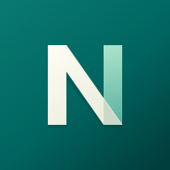

<!doctype html><html lang="ja"><meta charset="utf-8"><meta name="viewport" content="width=device-width,initial-scale=1"><title>Noema — App icon study</title>
<style>
*{box-sizing:border-box}body{margin:0;background:#faf9f5;color:#173c38;font-family:-apple-system,BlinkMacSystemFont,sans-serif}main{max-width:1100px;margin:auto;padding:64px}header{display:flex;justify-content:space-between;align-items:baseline;border-bottom:1px solid #cdd5ce;padding-bottom:24px}.brand{font-size:24px;font-weight:700;letter-spacing:.06em}.caption{font-size:12px;letter-spacing:.14em;color:#526b65}h1{font-size:36px;line-height:1.5;margin:40px 0 12px}p{color:#526b65;line-height:1.8}.grid{display:grid;grid-template-columns:1.1fr 1fr;gap:24px;margin-top:32px}.hero{display:grid;place-items:center;background:#e8ede5;border-radius:24px;padding:44px}.hero img{width:240px;border-radius:54px;box-shadow:0 20px 40px #003e3d26}.samples{padding:24px 32px;background:white;border-radius:24px}.row{display:flex;align-items:center;gap:28px;margin:24px 0 32px}.round{border-radius:50%}.squircle{border-radius:23%}.small{display:flex;gap:24px;align-items:center;height:60px}.label{font-size:12px;color:#526b65;letter-spacing:.08em}.footer{margin-top:32px;font-size:14px;display:flex;justify-content:space-between;gap:30px}.swatches{display:flex;gap:8px}.swatches i{height:24px;width:24px;border-radius:50%;display:block}@media(max-width:700px){main{padding:24px}.grid{grid-template-columns:1fr}h1{font-size:28px}.hero img{width:190px}}
</style>
<main><header><span class="brand">Noema</span><span class="caption">APP ICON / FOLDED N</span></header><h1>知ることは、視点を重ねること。</h1><p>一枚の紙から、立体的な「N」へ。<br>深緑と生成りに、次の視点を示すミントの面を重ねました。</p><div class="grid"><div class="hero"></div><div class="samples"><div class="label">HOME SCREEN / 80 PX</div><div class="row"></div><div class="label">SMALL SIZES / 48 · 32 · 16 PX</div><div class="small"></div><p>輪郭で認識できる、静かな存在感。<br>小さなタブでは、折り目を省いた専用のNを。</p></div></div><div class="footer"><span>ホーム画面用は不透明・全面背景。<br>OSによる丸型・角丸の切り抜きに対応。</span><div class="swatches"><i style="background:#00645f"></i><i style="background:#003e3d"></i><i style="background:#e6ead8"></i><i style="background:#a9e1c9"></i></div></div></main></html>
